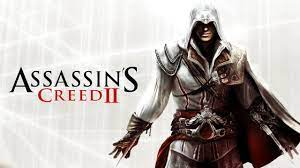

Veiksmo Žaidimai
Veiksmo žaidimai yra vienas populiariausių žanrų, kuriame žaidėjai dažnai turi greitai reaguoti ir atlikti sudėtingus veiksmus. Šie žaidimai dažnai pasižymi intensyvia kova, greitu tempu ir įspūdinga grafika. Populiariausi veiksmo žaidimai:
- Call of Duty - šaudymo žaidimas, kurio serija žinoma dėl savo įtraukiamos kampanijos ir daugelio žaidėjų režimo.
- Assassin's Creed - nuotykių ir veiksmo žaidimas, kuriame žaidėjai keliauja per istorinius laikotarpius ir atlieka įvairias misijas.
- Grand Theft Auto - atviro pasaulio žaidimas, kuriame žaidėjai gali laisvai tyrinėti miestą, vykdyti misijas ir užsiimti įvairia veikla.
- Devil May Cry - žaidimas, kuriame žaidėjai kovoja su demonais naudodami sudėtingas kovos technikas ir stilingus veiksmus.
Veiksmo žaidimai gali būti labai įvairūs - nuo šaudymo žaidimų iki kovinių ir platforminių žaidimų. Jie dažnai turi intensyvų siužetą ir įdomius personažus, kurie įtraukia žaidėjus į savo pasaulį.